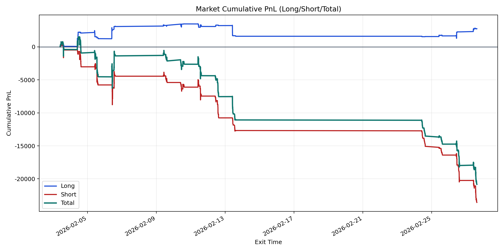
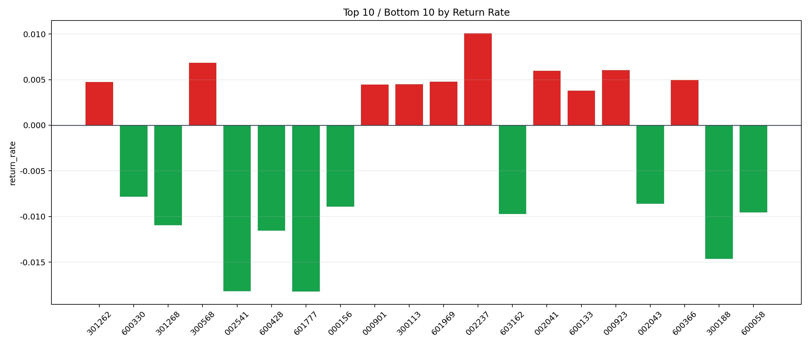

| repo_root | /home/haoranyou/data/output/alpha0.4_1w_5s_3ticks_index_filter/index_weights_1000 |
|---|---|
| period_months | 1 |
| period_label | 2026-02-03_to_2026-02-27 |
| start_time | 2026-02-03 09:52:57 |
| end_time | 2026-02-27 15:00:00 |
| n_trades | 2779 |
| n_symbols | 176 |
| total_pnl | -20828.180650000064 |
| long_total_pnl | 2744.583050000033 |
| short_total_pnl | -23572.763700000094 |
| total_entry_notional | 26310279.0 |
| long_entry_notional | 4362952.0 |
| short_entry_notional | 21947327.0 |
| total_return_rate | -0.0007916366318274339 |
| long_return_rate | 0.000629065607414437 |
| short_return_rate | -0.0010740608047622425 |
| top_symbols_by_return | ["002237", "300568", "000923", "002041", "600366", "601969", "301262", "300113", "000901", "600133"] |
| bottom_symbols_by_return | ["601777", "002541", "300188", "600428", "301268", "603162", "600058", "000156", "002043", "600330"] |

